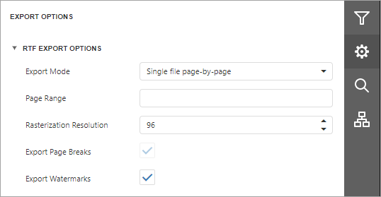

RTF Export Options
Before exporting a document to RTF, you can specify RTF-specific options in the Export Options panel.

Export Mode
Specifies how a document is exported to RTF. The following modes are available.
- The Single File mode allows exporting a document to a single file, without preserving the page-by-page breakdown.
- The Single File PageByPage mode allows exporting a document to a single file, while preserving the page-by-page breakdown. In this mode, the Page Range and Export Watermark options are available.
Page Range
Specifies a range of pages which will be included in the resulting file. To separate page numbers, use commas. To set page ranges, use hyphens.
Rasterization Resolution
Specifies the image resolution for raster images.
Export Page Breaks
Specifies whether to include page breaks in the exported RTF file.
Export Watermarks
Specifies whether watermarks (if they exist) should be included into the resulting file.